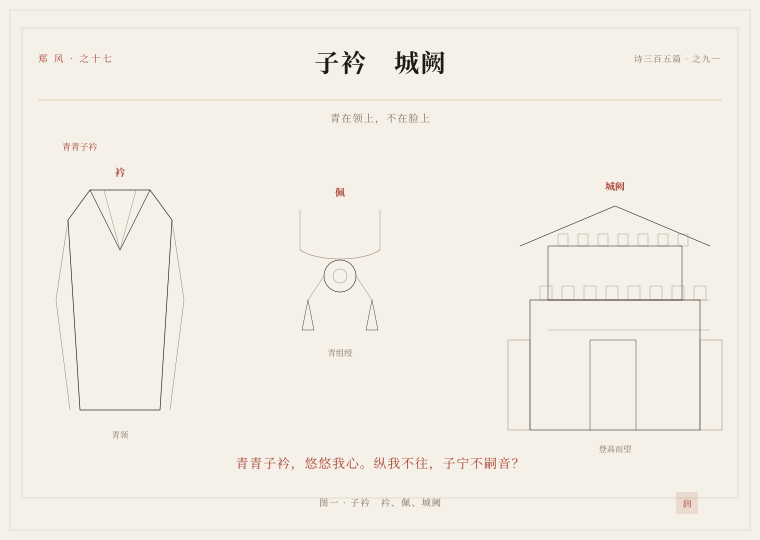
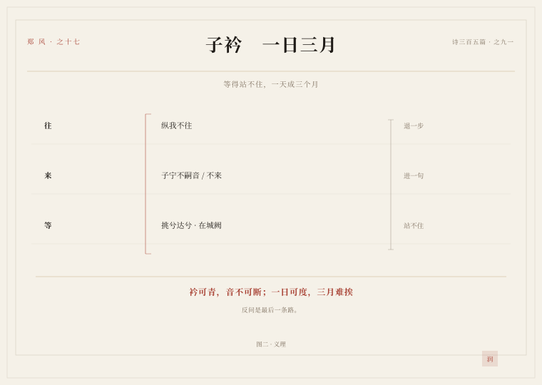

第九十一篇 子衿
郑风 · 之十七 SJ091
朗读 · 普通话
依经文原文朗读，章次不读出；配古琴底乐，不改速、不加拖腔。全库同一音色（豆包 TTS），非播音员录制。
一 解题
诗三判：
- 谁在说：一个在城阙上等的人。她记得对方的衣领、佩玉，记得自己没去找他；等不到信，也等不到人。
- 说什么事：三章。前两章是“责”：我不往，你也不嗣音、不来；后一章是“走”：在城阙上来回，一日不见，如三月。
- 为何编在此：郑风之十七。090 写“见”，091
写“不见”。一个风雨里见，一个城阙上等；一见一空。
《毛序》：“《子衿》，刺学校废也。乱世则学校不修焉。”
朱子《诗集传》：“赋也。青青、纯缘之色。具父母衣纯以青。子、男子也。衿、领也。悠悠、思之长也。我、女子自我也。嗣音、继续其声问也。此亦淫奔之诗。”
本库的看法：《子衿》是一首把“等”写成“责”的诗。
她不直说“我想你”，先说你的衣领、你的佩玉；再说“我不往，你难道不能捎个音、来一趟？”“纵我不往”是退一步，“子宁不”是进一句。
到了第三章，责不动了，人开始在城阙上走。“挑兮达兮”不是舞，是等得站不住。
一日不见，如三月——不是夸张，是等人把一天过成三个月。
先辨五事：“衿”是衣领，不是“襟”的前襟；“佩”是佩玉与组绶，不是“佩带”；“嗣音”是继续声问，不是“嗣子”；“挑达”是往来、跳跃，不是“挑担”；“城阙”是城门楼，不是“宫阙”。
二 经文
第一章
青青子衿，悠悠我心。
纵我不往，子宁不嗣音？
第二章
青青子佩，悠悠我思。
纵我不往，子宁不来？
第三章
挑兮达兮，在城阙兮。
一日不见，如三月兮。
分章：三章，章四句。
三 韵读
- 一章：衿、心、音，侵部；三句一韵。
- 二章：佩、思、来，之部；朱子“佩叶蒲眉反”“思叶新齎反”“来叶陵之反”。
- 三章：达、阙、月，月部；“挑”不入韵。
读法：侵部闭口，像衣领贴着咽喉；之部悠长，像思；月部短促，像一日一日数。声音越收，等越急。
四 字义与名物
- 青青：纯缘之色；父母在，衣纯以青。衿：衣领。
- 悠悠：思之长。纵：即使。宁：难道。嗣音：继续声问、捎信。
- 佩：佩玉；青青指系玉的组绶。挑达：往来、跳跃之貌。
- 城阙：城门楼；不是宫阙。三月：三个月；极言其长。
五 今译
青青的是你的衣领，悠悠的是我的心。即使我不去找你，你难道不能捎个信？
青青的是你的佩玉组绶，悠悠的是我的思念。即使我不去找你，你难道不能来？
来回走动啊，在城门楼上。一日不见，像三个月那么长。
六 章旨
- 一章：写“衿”与“音”。先记衣领，再责音问；人不来，连声音也不来。
- 二章：写“佩”与“来”。由领到佩，由音到人；责更深一层。
- 三章：写“城阙”与“三月”。责不动，只剩走；时间被等人拉长。
- 总收：衿可青，音不可断；一日可度，三月难挨。
等不是坐着等，是走来走去。
七 诗教
- 兴：以“青青子衿”起兴。先写衣，再写心；衣是眼前，心是衣里。
- 观：观“学校”与“朋友”。毛序看见学校废，朱子看见男女；同一首诗，一关心问，一关心人。
- 群：朋友靠音问相连；“嗣音”一断，关系就只剩记忆。
- 怨：诗里没有骂，只有反问。反问是给对方的最后一条路。
八 分寸与边界
- 不可把“衿”读成“襟”。衿是领；一读成前襟，青青就贴错地方。
- 不可把“佩”读成“佩带”。它是佩玉与组绶；一读成带子，玉就没了。
- 不可把“嗣音”读成“嗣子”。它是续声问；一读成继承，诗就成了家事。
- 不可把“挑达”读成“挑担”。它是往来；一读成挑夫，城阙就成了集市。
- 不可把“一日三月”当夸张。它是等人的时间；一读成修辞，等待就轻了。
九 存疑
- 诗旨：毛序“刺学校废”；朱子“淫奔之诗”。一学一情；本库两存，以“等而责”读。
- “衿”：衣领；一说“襟”为前襟。从领，才与“青”相应。
- “嗣音”：继续声问；毛传“习音乐”，郑笺“传声问”。从郑笺，才与“不来”对。
- “挑达”：往来相见；一说“跳跃”。两读相近，从“往来”。
- 作者与年代：序不言作者；朱子以为“淫奔”。无确证。
十 跨典
- 《论语·颜渊》：“君子以文会友，以友辅仁。”——“嗣音”是友朋相续，不是私情。
- 《礼记·学记》：“独学而无友，则孤陋而寡闻。”——学校废，先废的是音问。
- 《礼记·深衣》：“具父母，衣纯以青。”——朱子以“青青”为父母在之服；衣领有礼。
- 《诗本音》：一章衿、心、音侵部，二章佩、思、来之部，三章达、阙、月月部，见卷三。
十一 双卡与图
双卡七对：
| 衿（衣领） |
衿（前襟） |
| 青青（纯缘之色） |
青青（草色） |
| 佩（佩玉组绶） |
佩（佩带） |
| 嗣音（续声问） |
嗣音（嗣子） |
| 宁（难道） |
宁（安宁） |
| 挑达（往来） |
挑达（挑担） |
| 城阙（城门楼） |
城阙（宫阙） |

图一 · 子衿 衿、佩、城阙

图二 · 子衿 往、来、一日三月
读图三处：
- 一件衣领：图一左一件交领衣，领缘用青色双线，不画人；青在领上，不在脸上。
- 一组佩玉：图一中段组绶下垂，系璜、琚、冲牙；青是绶，不是玉。
- 一座城阙：图一右城门楼两层，楼中空，不画人；等的人在楼上，楼比人先到。